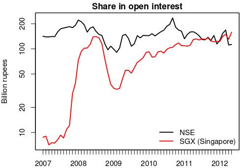
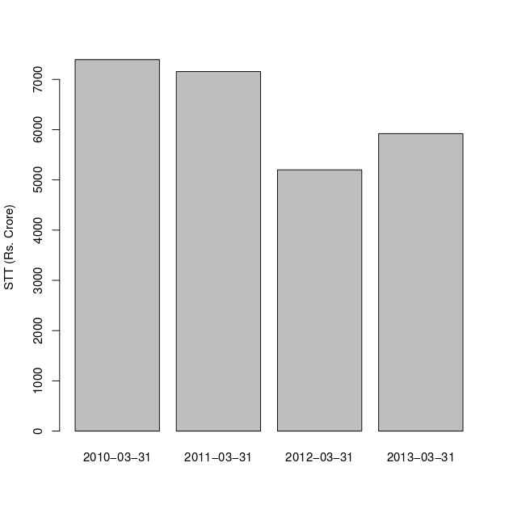

Reform, then remove STT
Financial Express, 28th January 2013
The rate must be lowered, foreign participants should be reimbursed, and finally the tax must be removed over 4-5 years
Realistic discussions about whether the Union Budget should propose to remove the securities transaction tax (STT) or introduce a commodities transaction tax need to be more balanced than simply saying a complete no or yes to either. The first principles of public finance teach us that we should not tax transactions. Taxes like customs, octroi or excise-which tax transactions-have to be removed. All the tax revenue of the government must come from three sources: income tax on individuals, the goods and services tax, and property tax. This is the long-term direction of tax policy.
In this setting, STT was clearly a move in the wrong direction. But, in 2012-13, it was estimated that it would raise R5,920 in tax collection. This is a sizeable amount of money. To be pragmatic, it is unlikely that at a time of fiscal crunch, the tax would be removed completely. It can, however, be reformed slowly, in the following three stages. The first stage is to lower the rate by increasing the tax base. This would be revenue-neutral and reduce the visible distortions associated with the tax. The second stage would be to reimburse foreign participants, as is done with zero-rating of VAT. The third stage would be to set a timetable for removing the tax over a four or five year period. These steps add up to a feasible strategy for the reform of STT.
The introduction of STT in the equity market has given distortions in the financial system. There are four components of the financial system: currency, fixed income, commodities and equities. The imposition of STT upon only one-the equity market-has given incentives for market participants to focus on the other three. There is an artificial avoidance of equity market activity, with employees, public participants and capital shunning the equity market in favour of the other three markets.
All taxes are distortionary, and a basic principle of public finance is that we should have a low rate that is spread across a large tax base. It would hence make sense to cut the magnitude of STT and apply it across all organised financial trading-i.e. equities, currencies, commodities, and fixed income. This would generate no adverse impact in the short run while reducing the distortions in the economy where market participants are avoiding activity on the equity market.
  A major problem that India now faces is the loss of market share of onshore finance. The most important financial products of India are stock market indexes-Nifty and BSE Sensex. In both cases, severe competition is now found from overseas markets which do not have an STT. Nifty futures, trading in Singapore, have no STT. This puts the onshore market at a disadvantage. As figure 1 shows, the offshore market has rapidly gained market share in Nifty futures.
When foreign investors send an order to India, there is an entire chain of activity where revenues are generated. This includes brokerage companies, accountants, lawyers, hotels, aviation services, etc. When the same foreign investor sends this order to Singapore instead, this entire chain fuels the Singapore economy instead. The magnitudes of the impact on the economy is vastly bigger than those seen as tax revenues for the government through the existing STT.
In this situation, a reduction in the magnitude of STT on the equity market would help in two ways. First, it would bring capital and labour back into the equity market to a greater extent, and thus increase liquidity of the onshore equity market. This would, of course, benefit the domestic economy. In addition, a foreign market participant would be more inclined to send an order to India as opposed to Singapore when the Indian market is more liquid. The second and direct impact would come through the impact of a reduced STT which directly reduces the cost faced by a foreign investor operating in India.
This first stage of STT reform-reducing the rate and applying it to all organised financial trading-is revenue-neutral. In the jargon of economists, implementing it would be 'Pareto superior': it yields gains without hurting anyone.
The second stage of the STT reform should be the establishment of a system through which foreign investors are refunded the transaction taxes paid by them. The decision by a foreign investor to send an order to Singapore versus India should not be distorted by tax considerations. We have already done this in the field of goods. When steel is exported from India, the entire burden of indirect tax suffered in India is refunded through 'zero rating of exports'. By the same principle, when trading services are exported to a non-resident, the entire burden of domestic taxation should be refunded to him.
Through this, we would get a level-playing field on taxation, in the eyes of foreign investors, about trading in Singapore versus trading in India. The competition between Singapore and India in finance should be played on genuine factors, such as pricing and service quality. It should not be about avoiding policy mistakes in India.
This second stage of the STT reform costs money for the government. Given that FII transactions account for roughly 15% of turnover, it would involve a direct reduction of revenue for the government of roughly R900 crore a year. At the same time, some of this difference would come back to the government through increased tax revenues on the increase in GDP that comes when foreign transactions that are going to Singapore shift to India.
The third stage of the STT reform is linked to a broader programme of fiscal consolidation. Indian public finance is in very poor shape. The strengthening of public finance critically relies on building the GST, removing subsidies, and on scaling back the UPA's welfare programmes. These changes will not be achieved in a short time. Hence, the government must commit to a five-year programme through which the taxation of financial transactions would be phased out. This is the kind of time horizon over which the GST, and efforts are reducing subsidies and welfare programmes, would kick in.
Back up to Ila Patnaik's media page
Back up to Ila Patnaik's home page